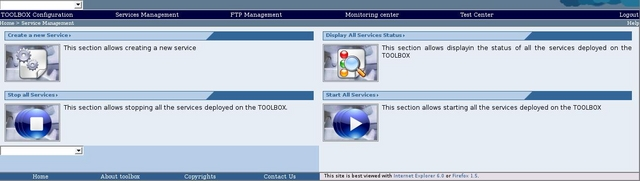
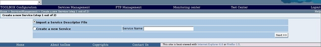

The import procedure allows to migrate a service to a different installation of the TOOLBOX. To import a service follow these steps.
To create a new service follow these steps.
Perform the login procedure.
Click on the Service management link in the toolbar. The browser should display

Click on the "Create a new Service" section link. The following page should be displayed
Select the "Import a Service Descriptor File" option. Then click on the "Next >>" button. The browser will display the import page

This page allows importing a Service that has been exported using the Export procedure. To return to the previous page you can click on "Back", otherwise fill the fields as follow:
Click on the create button. If the service has been correctly imported you will be forwarded to the Service management page with the new service selected.
If some parameters are not valid, you will be redirected to a page with a WARN message will outline the missing or wrong parameter.
 When a service is imported the operation described in the export file are immediately available in the new service. To manage these operation click on the "Operation Manager" link on the toolbar.
When a service is imported the operation described in the export file are immediately available in the new service. To manage these operation click on the "Operation Manager" link on the toolbar.
 Keep attention, all the resources used in the scripts describing the operations have to be present in the new environment. The TOOLBOX exports only the resources uploaded via the Web Application (i.e. scripts and Schema). Thus if, for example, the script uses an XSL file to performs an operation, this file have to be present in the target environment at the same location.
Keep attention, all the resources used in the scripts describing the operations have to be present in the new environment. The TOOLBOX exports only the resources uploaded via the Web Application (i.e. scripts and Schema). Thus if, for example, the script uses an XSL file to performs an operation, this file have to be present in the target environment at the same location.